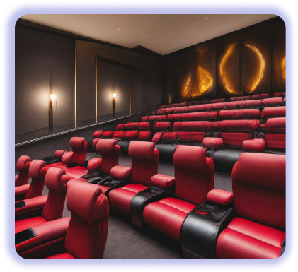
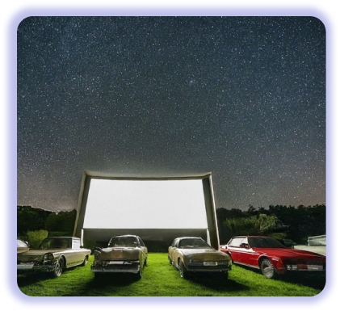
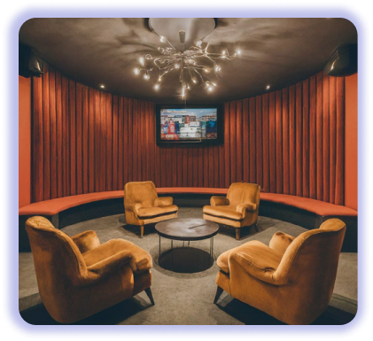
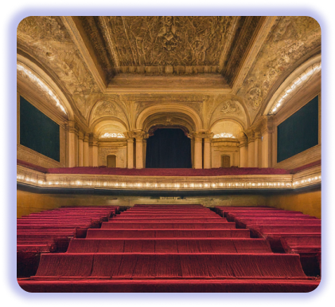

|  | The Picture Palace |
|---|---|
|
Step into a timeless realm of cinematic grandeur at The Picture Palace. This opulent establishment boasts plush velvet seats, ornate chandeliers, and a state-of-the-art sound system that envelops you in the film's world. Indulge in gourmet popcorn and a curated selection of fine wines and spirits, served by attentive staff in a luxurious lounge. |
|
|  | Starlight Cinema |
|
Underneath a canopy of twinkling stars, Starlight Cinema offers an unforgettable cinematic experience. Recline in comfortable loungers, wrapped in cozy blankets, as you enjoy a film on a massive outdoor screen. A gourmet food truck serves up delectable treats, while a fire pit provides warmth and ambiance. |
|
|  | The Exclusive Enclave |
|
For the discerning cinephile, The Exclusive Enclave is a private oasis. This intimate theater features custom-designed seating, a personalized bar, and a state-of-the-art projection system. Enjoy a curated selection of films, complete with exclusive screenings and special events. |
|
|  | The Grand Theatre |
|
Experience the epitome of cinematic luxury at The Grand Theatre. This majestic venue features a grand foyer adorned with intricate details, a sweeping staircase, and a stunning auditorium with plush velvet seats and ornate chandeliers. Indulge in a gourmet meal or a glass of champagne before the show, and enjoy the impeccable service that defines this extraordinary experience. |